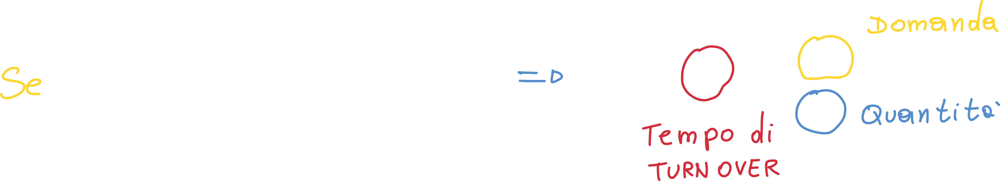
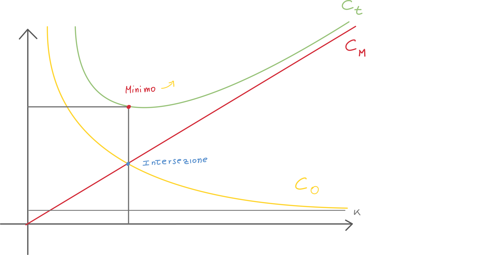
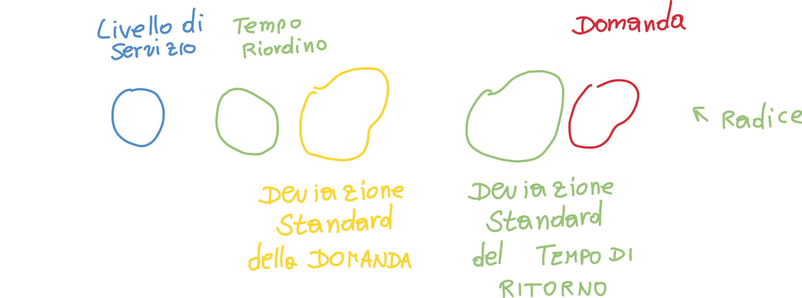

Gestione della produzione
Produzione per lotti
Grafico a pagina 208 - capitolo 7
Poniamoci nel seguente esempio: FIAT riesce a produrre 1200 Panda al giorno (teoricamente); nella realtà però, ne riesce a produrre molte meno. Questo perchè tutti vogliamo relativamente una FIAT Panda diversa: colore, motore, optional, etc.
Di conseguenza viene naturale pensare ad uno strataggemma per utilizzare tutto il potere di produzione (dei macchinari e lavoratori) anche se la domanda per il prodotto standardizzato (motore standard, colore standard, etc. per cui si possono produrre 1200 pezzi invece che poche decine) è molto piccola.
Una produzione viene definita per lotti quando la richiesta del bene è limitata, ovvero quando la capacità produttiva è molto più elevata rispetto alla domanda.
In questo caso non è possibile instaurare una produzione continua.
In altre parole: se tutti comprassimo la stessa macchina, la produzione giornaliera di FIAT panda potrebbe essere di 1200 unità al giorno senza l'utilizzo della produzione per lotti N.d.S.
Quando avviene una produzione per lotti?
Quando la richiesta di un tipo di prodotto è limitata rispetto alla capacità produttiva totale di tutto il sistema di produzione.

In cosa consiste la produzione per lotti?
Il sistema produce un insieme di prodotti (in quantità piccola rispetto alla capacità produttiva) che sono tutti caratterizzati dalle stesse qualità (sono identiche).
Rapporti nella produzione per lotti - la giacenza media
- Ratio di produzione che è definito come il rapporto tra la quantità prodotta ed il tempo impiegato a produrli. E' dato dalla tangente di alpha.
- Ratio di assorbimento indica con che velocità i beni vengono chiesti dal mercato. E' dato dalla tangente di beta.
Possiamo inoltre trovare la quantità di prodotto realizzata (giacenza media):

Allo stesso modo la giacenza media può essere calcolata nel caso dell'assorbimento o consumo:

Possiamo inoltre calcolarci il ratio di produzione - r, che finora abbiamo definito come il numero di prodotti diviso il tempo che è necessitato a produrli; di conseguenza possiamo scrivere:

Questo modo di calcolare il ratio r ci torna utile perchè riusciamo a capire il rapporto tra il ratio di consumo e di produzione:
r = 1 Il ratio di consumo è uguale a quello di produzione; di conseguenza avremo un grafico di questo tipo:
 In questo caso potremmo pensare di progettare una produzione di tipo continua, in modo da produrre continuamente l'esatta quantità di quella che viene consumata (venduta).
In questo caso potremmo pensare di progettare una produzione di tipo continua, in modo da produrre continuamente l'esatta quantità di quella che viene consumata (venduta).r = 0 In questo caso se il ratio è zero vuol dire che la richiesta di prodotto è troppo alta, e di conseguenza il tempo di produzione è zero. Se il tempo di produzione è zero allora il ratio di produzione (ovvero la quantità di prodotto rispetto al tempo, tempo al denominatore!) sarà infinito, ovviamente impraticabile.
Questo cosa vuol dire? Quando il ratio di produzione è infinito non siamo noi a produrre il prodotto! Invece di produrlo, il prodotto ci viene approviggionato dall'esterno in un'unica soluzione.

Tempo (medio) di permanenza di un prodotto a magazzino
Facendo nuovamente riferimento al grafico:
Possiamo calcolare il tempo medio di permanenza andando smeplicemente a calcolare l'area del triangolo che forma il nostro grafico:
Diagramma costi-quantità
E' un diagramma che rapporta i costi alle quantità, che determina il valore di quella quantià ottima da approviggionare che minimizzi la somma dei costi di acquisto e di gestione del prodotto a magazzino.
Nell'esempio dell'acqua da comprare al supermercato, compriamo spesso una grande quantità di acqua (ballette di bottiglie) in modo da non dover tornare spesso a comprare un prodotto che sappiamo ci servirà spesso (ne conosciamo la quantità che utilizzeremo). In questo caso il costo è intrinseco e logistico: tornando troppe volte al supermercato sprecheremo tempo e combustibile.
Ovviamente potremmo avere anche il problema opposto, ovvero quello di approviggionarci troppo: abbiamo ovviamente dei magazzini in cui andiamo a posizionare i prodotti di cui ci approviggioniamo; questi magazzini hanno dei costi chiamati Cf costi di gestione del magazzino e comprendono:
Costi fissi
- Oneri assicurativi (atti vandalici, incidenti, etc.)
- Vigilanza
- Ammortamento del magazzino
- Oneri energetici (illuminazione e macchinari)
- Manutenzione
Costi variabili
- Supponiamo di doverci approviggionare di pesce surgelato: i costi variabili saranno sicuramente collegati alla conservazione del pesce: più è pieno il nostro magazzino maggiore saranno i costi; questo perchè un congelatore consuma maggiormente quanto più è colmo. Un altro costo variabile è sicuramente quello derivabile dall'obsolescenza del componente: se ad esempio abbiamo un'azienda che assembla computers, è soggetta a questo problema: una scheda video, ad esempio, diventa obsoleta (o poco appetibile al cliente) anche dopo 1/2 anni; con i processori questo tempo si stringe ancora di più. Non potremo quindi approviggionarci di troppi componenti, correremo il rischio di ritrovarci con dei componenti in magazzino che non potremmo più usare.
- Lo stesso vale per l'industria tessile: queste aziende non possono permettersi di ritrovarsi a fine stagione con dei capi ormai obsoleti: è per questo motivo che moltissime aziende annunciano periodicamente un periodo di saldo.
Calcolo dei costi
Costi totali
I costi totali possono essere calcolati andando a sommare i costi della produzione ed i costi del mantenimento del magazzino; possiamo quindi scrivere:

I costi fissi possono essere espressi mediante una generica costante k; i costi di mantenimento dei prodotti nel magazzino, invece, possono essere espressi:

Bisogna notare che Cm è un valore unitario percentuale.
Costi di produzione totale del lotto
Possiamo calcolare i costi di produzione totali con la formula:

In questo caso compare la domanda: essa è il valore che ci dice la quantità totale di prodotto che il mercato richiede; non è più un rapporto (rateo) come ad esempio lo era il rateo di assorbimento.
Costi di preparazione del lotto - set-up

Csl è il costo di set-up. Inoltre possiamo prendere il valore medio della domanda andando a dividere D per 2 (prendendo quindi il valore medio).
Lotto ottimo di approviggionamento
Per poter produrre un lotto di prodotti abbiamo sicuramente bisogno di approviggionarci di materie prime o sottoprodotti. Per scoprire quanti prodotti dobbiamo ordinare (dobbiamo per forza ordinarli in anticipo perchè l'approviggionamento richiede tempo!) è necessario effettuare il successivo ragionamento.
La quantità ottima del lotto di componenti da approviggionare è detta lotto ottimo di approviggionamento; essa è la quantità ottima che minimizza i costi.
Possiamo quindi riscrivere i costi totali andando a scrivere le quantità ricavate finora:

Se andiamo a derivare rispetto a Q, otteniamo:

Possiamo porre uguale a zero il rate dei costi totali (la derivata dei costi totali) ed isoliamo Q in modo da ottenere il lotto ottimo di produzione / approviggionamento:

Possiamo graficare il tutto per capire meglio cosa stiamo cercando:

Il lotto ottimo di produzione non è altro che il valore della quantità di prodotti Q corrispondenti al punto di minimo del costo totale composto dai costi di setup e costi di mantenimento (magazzino); è per questo modo che calcoliamo la derivata (i minimi si calcolano cosi!).
Potremmo anche non calcolare la derivata andando ad eguagliare i costi di mantenimento e produzione, otterremmo lo stesso risultato:

Minimizzare la quantità di prodotto da ordinare
Quello che le aziende vorrebbero, è quello di massimizzare i guadagni con il minor numero di prodotti, ma se ordiniamo un quantitativo troppo basso di prodotti, il costo di set-up aumenterebbe (basta guardare il grafico precedente).
Quello che dovremmo cercare di fare, quindi, è di "portare" tutto il grafico verso l'asse delle y.
- Potremmo pensare di ridurre la domanda, ma ovviamente non è possibile farlo, altrimenti i clienti troverebbero un fornitore alternativo.
- Quello che invece possiamo fare, è di negoziare costi logistici il più bassi possibili e ridurre i costi di set-up
Modelli di gestione delle scorte
Possiamo classificare i modelli di gestione delle scorte in due categorie:
- Deterministici - tutti i parametri (ovvero la domanda ed il tempo che la merce ordinata impiega ad arrivare - tempo di riordino) sono noti.
- Stocastici - Almeno uno dei due parametri è aleatorio.
Un'ulteriore classificazione dei modelli è quella che fa riferimento alla costanza del parametri
- Statici - la domanda ed il tempo di riordino non variano nel tempo
- Dinamici - un esempio può essere tuti quei prodotti stagionali, in cui la domanda aumenta in certi periodi dell'anno.
Un'ulteriore classificazione è la seguente:
- Domanda indipendente
- Domanda dipendente - in cui la domanda è strettamente legata da quella del prodotto finito.
In questo paragrafo analizziamo il modello di Wilson, detto anche Economic Order Quantity - EOQ: prendiamo in esame un solo prodotto alla volta ed ottimizziamo la funzione costi-quantità.
Ci sono inoltre metodi specifici come il Material Requirements Planning - MRP, che pianificano l'acquisizione dei materiali e dei componenti in funzione delle quantità di prodotto da realizzare e dei tempi di disponibilità.
Modello di Wilson - Modello del lotto economico - DETERMINISTICO
- Questo modello prevede il calcolo della quantità da acquistare per ogni ordine, che chiameremo Qw = COSTANTE.
- Anche il tempo che intercorre tra due arrivi successivi o due emissioni di ordini sarà costante; questo tempo viene detto tempo di turn over e viene indicato con T (bisogna notare che questo valore indica strettamente l'intervallo di tempo tra l'emissione di due ordini, e non il tempo che impiegano ad arrivare N.d.S).
- La funzione di assorbimento della scorta Q(t) durante il tempo T varia linearmente, normalizzata tra Q e 0; di conseguenza la sua media vale Q/2.
- Chiamiamo punto di riordino Pr il tempo necessario al fornitore per processare l'ordine e farlo giungere a destinazione; la quantità corrispondente è detta Livello di riordino Lr. In altre parole, andando ad emettere l'ordine al tempo di riordino, potremo avere la nuova scorta proprio quando quella in magazzino sarà finita N.d.S.
Possiamo rappresentare graficamente il tutto:

Capiamo quindi che se in un intervallo di tempo avente ampiezza unitaria viene consumata una quantità D (ovvero la domanda), allora la Quantità Q verrà consumata in un tempo T:

Questo tempo si dice Tempo di turn Over, ed è il tempo in cui una certa quantità viene consumata data una domanda D.

Anche in questo caso possiamo trovare la Quantità Qw nota come lotto economico di approviggionamento - EOQ andando a derivare l'eqazione della curva Ct e risolvendo per Ct' = 0 (trovo i minimi); l'equazione risultante è:

Modello del periodo di riordino fisso e scorta di sicurezza
Pagina 217
Questo modello consiste nell'effettuare degli ordini regolari in modo da non avere mai la quantità disponibile al di sotto di un Livello minimo Lm; il grafico ci chiarisce il concetto:

Possiamo trovare il valore della scorta di sicurezza Ss con la formula:

Diversi tipi di produzione: Push/Pull
Possiamo dare una prima definizione (anche se errata) della differenza tra sistemi Push e sistemi Pull:
I Sistemi Push gestiscono i processi in anticipo rispetto al fabbisogno dei clienti; potremmo quindi dire che i sistemi di produzione di tipo Push generano prodotti che vengono poi stoccati e solo successivamente venduti (la produzione non proviene da un cliente!), in altre parole make-to-stock
I Sistemi Pull invece generano prodotti su ordinazione di un cliente, e quindi make-to-order
Questa definizione molto semplice è tuttavia parzialmente sbagliata; la reale definizione è la seguente:
Un sistema di produzione di tipo Pull è quel sistema che limita esplicitamente la quantità di lavoro in corso (work-in-progress, ovvero i prodotto in produzione al momento) che può essere nel sistema.
Un sistema di produzione di tipo Push è quel sistema che non ha limiti espliciti sul WIP che può essere nel sistema.
Produzione Push: Material Requirement Planning - MRP
L'MRP è una tecnica computerizzata progettata per migliorare la produttività: le aziende utilizzano i sistemi MRP per assicurarsi che i materiali e componenti siano disponibili nelle quantità giuste; l'MRP viene inoltre usato per programmare il tempo di consegna dei prodotti.
L'MRP è uno strumento essenziale per minimizzare l'investimento di inventario: esso infatti è utile in fasi di produzione, quando bisogna acquistare materiali e programmarne la consegna.
Funzioni dell'MRP
- Gestione dell'inventario - L'MRP tiene traccia delle scorte di materie prime, semilavorati e prodotti finiti.
- Calcolo delle necessità di materiali - L'MRP ci permette di determinare le quantità ed i tempi di rifornimento dei materiali necessari a soddisfare la domanda.
- Pianificazione degli ordini di produzione - Basandosi sulle quantità di prodotto richiesto, l'MRP pianifica gli ordini di produzione, specificando quali prodotti finiti devono essere prodotti ed in quale quantità.
Input dell'MRP
1. Master production schedule - piano di produzione
E' una lista che risponde alle domande:
- Quali prodotti finali devono essere prodotti?
- Quante copie per prodotto devono essere prodotte?
- Quando saranno (probabilmente) pronti i prodotti per essere spediti?
2. Bill of material file - lista dei materiali
In modo da calcolare i materiali grezzi richiesti per il prodotto finale, l'MRP deve "conoscere" la struttura del prodotto. Questa informazione è contenuta nel file della lista dei materiali, che è una lista di parti di componenti e sotto assemblati che costituiscono ogni prodotto.

3. Inventory Record File - Registro dell'inventario
E' Obbligatorio avere dei dati live ed aggiornati sullo stato dell'inventario. Questo obbiettivo è raggiunto utilizzando un sistema computerizzato di inventario che aggiorna il registro dell'inventario.
In questo registro bisogna avere il del lead time (tempo trascorso tra la richiesta di un prodotto e la sua consegna effettiva) per:
- Materiali grezzi
- Componenti
- Assemblaggi
Processo dell'MRP
Il processo MRP può essere diviso in 4 step fondamentali:
Passo 1 - stabilire la domanda ed i materiali richiesti per soddisfarla
Lo step iniziale dell'MRP è proprio quello di effettuare una stima della domanda e dei requisiti richiesti per soddisfarla.
Usando la lista dei materiali (che comprende una lista di materiali grezzi, assemblaggi e componenti richiesti per fabbricare il prodotto finale), l'MRP suddivide la richiesta in specifici materiali grezzi e componenti.
Passo 2 - Verificare la domanda rispetto all'inventario e assegna le risorse
Questo passo comprende il controllo della domanda rispetto a quello che già abbiamo in inventario; successivamente l'MRP distribuisce le risorse di conseguenza.
Passo 3 - Programmazione della produzione
Questo passo comprende semplicemente il calcolo del tempo e lavoro richiesto per fabbricare il prodotto; inoltre viene stabilita una deadline (scadenza).
Passo 4 - Monitorare il processo
Il passo finale è semplicemente quello di monitorare il progetto alla ricerca di un qualsiasi problema: l'MRP può automaticamente notificare i managers di eventuali ritardi ed addirittura suggerire piani in modo da rispettare le scadenze.
Output dell'MRP
L'MRP genera una grande varietà di outputs che possono essere utilizzati nella pianificazione e gestione delle operazioni; questi output comprendono:
Outputs primari
- Avviso di rilascio ordine - Per effettuare gli ordini che sono stati pianificati nel processo MRP.
- Avviso di ri-pianificazione o cancellazione - Mostra la ri-pianificazione o la cancellazione degli ordini aperti a causa di una modifica nel piano di produzione principale.
- Report sullo stato dell'inventario.
Output secondari
- Rapporto sulle performance di vario tipo - Indicazione dei costi, utilizzo degli articoli, tempi di consegna effettivi rispetto a quelli pianificati, ecc.
- Rapporti di aspettative - Mostrano le deviazioni dal programma, gli ordini in ritardo, gli scarti e così via.
- Previsioni dell'inventario - Indicano i livelli di inventario previsti nei periodi futuri.
Pro e contro dell'MRP
PRO
- Avere la certezza che materiali e componenti saranno disponibili quando serviranno.
- Minimizzare i livelli di magazzino e costi associati, ovvero mantenere solo le quantità necessarie di materiali e prodotti finiti per soddisfare la domanda dei clienti senza accumulare eccessi di inventario.
- Gestione ottimizzata dell'inventario.
- Ridurre il Lead Time del cliente.
CONTRO
- I sistemi MRP possono a volte essere difficili e costosi da implementare
- Bassa flessibilità: siccome l'MRP richiede degli input ben strutturati, se anche solo uno o due input sono inaccurati, gli errori si moltiplicano negli stadi più avanzati.
Il Capacity Requirement Planning
Il CRP è una componente chiave dell'MRP (Material Requirements Planning) e si occupa della pianificazione delle risorse di produzione, come macchinari, attrezzature, manodopera e tempo, per garantire che siano adeguati per soddisfare le necessità di produzione.